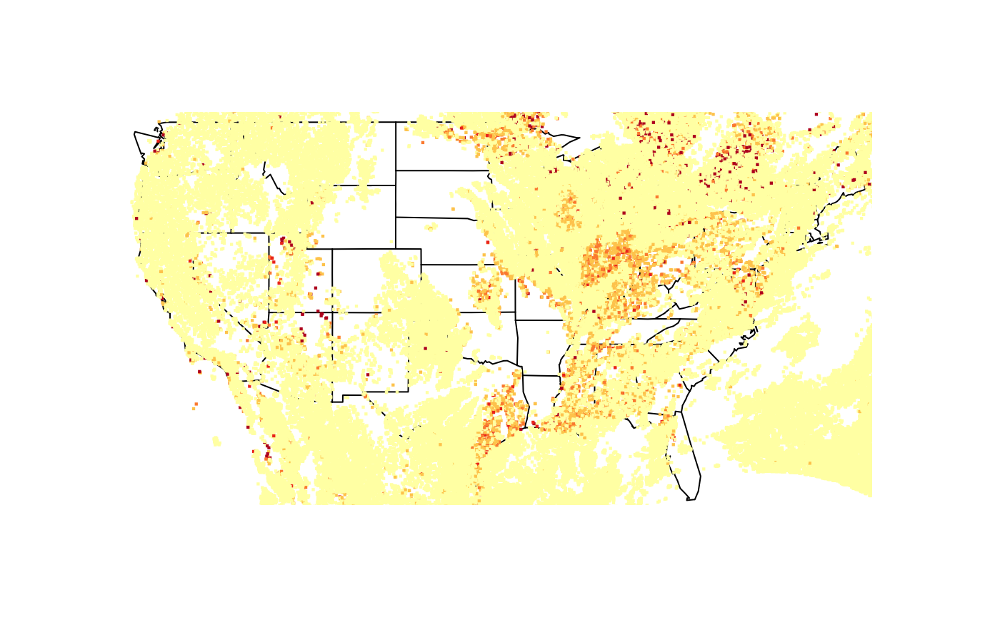
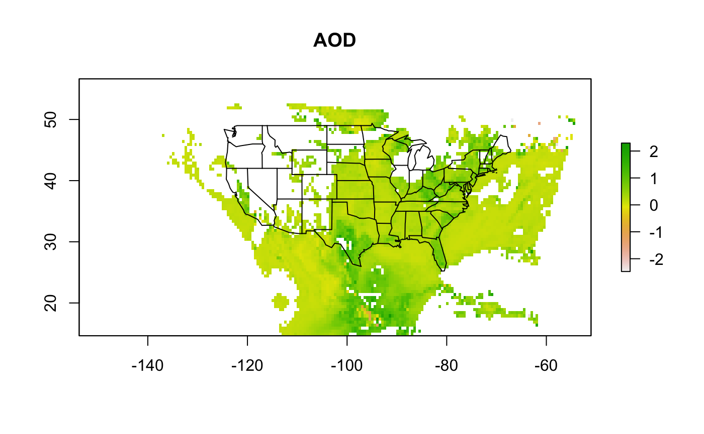

Intro to GOES AODC Data
Mazama Science
7/30/2019
intro_to_goes_aodc_data.RmdThis vignette will cover the basics of working with aerosol optical depth (AOD) readings from the GOES-16 Geostationary Operational Environmental Satellite.
Aerosol optical depth is a measure of the amount of particles in a vertical column of the atmosphere. The value itself is related to the scattering and absorbition of certain light waves on the atmosphere measured by the Advanced Baseline Imager (ABI) on board the GOES-16 satellite. AOD is unitless, but values closer to 0.0 correspond to a cleaner atmosphere while higher values correspond to hazy conditions. An average AOD for the U.S. would usually lie between 0.1 and 0.15. More on the measurement process can be found in the GOES-R aerosol optical depth overview and the ABI AOD algorithm theoretical basis document.
Package Setup and Dependencies
Aerosol optical depth is stored along with many other kinds of measurements taken by the GOES-16 satellite in large netCDF “Common Data Form” files. These files are structured for the efficient access of multidimentional array-oriented data like atmospheric readings.
Our first step when using the MazamaSatelliteUtils package is to provide a SatelliteDataDir: A directory where all our working netCDF files will be stored to and read from:
Downloading Data and Creating netCDF Handles
A new netCDF file is generated about every five minutes, meaning that a single hour is typically made up of around a dozen files. Downloading these files does not load them as objects in the R environment, but instead saves them to the SatelliteDataDir directory where they can be opened individually through their netCDF handles.
For this walkthrough, let’s take a look at data read throughout hour 16:00 UTC on May 16, 2019:
If an hour is not specified, then every file generated over the given day will be downloaded. The goesaodc_downloadAOD() function also returns a vector of paths to each downloaded file. However, if a file already exists in the SatelliteDataDir directory then it will not be downloaded again (and will not be included in the returned vector). We can see which files are now availible to read by calling goesaodc_listFiles() on the date we specified:
## [1] "OR_ABI-L2-AODC-M6_G16_s20191361601308_e20191361604081_c20191361606472.nc"
## [2] "OR_ABI-L2-AODC-M6_G16_s20191361606308_e20191361609081_c20191361611412.nc"
## [3] "OR_ABI-L2-AODC-M6_G16_s20191361611309_e20191361614081_c20191361616461.nc"
## [4] "OR_ABI-L2-AODC-M6_G16_s20191361616309_e20191361619081_c20191361621509.nc"
## [5] "OR_ABI-L2-AODC-M6_G16_s20191361621309_e20191361624082_c20191361626409.nc"
## [6] "OR_ABI-L2-AODC-M6_G16_s20191361626309_e20191361629081_c20191361631503.nc"
## [7] "OR_ABI-L2-AODC-M6_G16_s20191361631309_e20191361634082_c20191361636545.nc"
## [8] "OR_ABI-L2-AODC-M6_G16_s20191361636309_e20191361639082_c20191361641542.nc"
## [9] "OR_ABI-L2-AODC-M6_G16_s20191361641309_e20191361644082_c20191361646546.nc"
## [10] "OR_ABI-L2-AODC-M6_G16_s20191361646309_e20191361649082_c20191361651566.nc"
## [11] "OR_ABI-L2-AODC-M6_G16_s20191361651309_e20191361654082_c20191361656556.nc"
## [12] "OR_ABI-L2-AODC-M6_G16_s20191361656309_e20191361659082_c20191361701585.nc"To read one of these netCDF datasets we need a handle to access it by. This can be done by calling goesaodc_openFile() on one of the filenames, so let’s open the first one in our downloaded time range dateFiles[1]:
netCDF Handle Functions
Now that we have a handle (class ncdf4) to a netCDF file we can start exploring how this dataset is structured.
## [1] "filename" "writable" "id" "safemode" "format"
## [6] "is_GMT" "groups" "fqgn2Rindex" "ndims" "natts"
## [11] "dim" "unlimdimid" "nvars" "var"Here is a brief rundown of the various top level elements in these ncdf4 objects:
-
filename- A character string containing the name of the file. -
writeable- Logical stating whether or not the file can be written to. This will always beFALSEwhen the file is loaded throughgoesaodc_openFile(). -
ndims- The number of dimensions in the file. -
nvars- The number of variables in the file that are not dimensional variables. -
natts- The number of global attributes. -
unlimdimid- The unlimited dimension id. -1 if there is none.
At this point we can freely access any of the 68 variables in the dataset (listed by names(nc$var)) using the ncvar_get() function provided through ncdf4.
## [1] 3750000## [1] -2.575102 2.475025AOD Data as a Tibble
For our purposes of mapping AOD values, we can consolidate all the data we need (longitude, latitude, and AOD) and make it even easier to access by forming it into a tibble with the function goesaodc_createTibble(). The “DQF” variable is included as well, which represents the data quality flag for each reading. This flag can take one of the four following values (source p.295):
- 0 - High quality
- 1 - Medium quality
- 2 - Low quality
- 3 - No retrieval flag
| AOD | DQF | lon | lat |
|---|---|---|---|
| 0.1676945 | 2 | -111.2095 | 52.40050 |
| 0.1220750 | 2 | -111.1630 | 52.39641 |
| 0.1533613 | 2 | -111.1166 | 52.39232 |
| 0.1359458 | 2 | -111.0703 | 52.38824 |
| 0.1354064 | 2 | -111.0240 | 52.38417 |
| 0.1523596 | 2 | -110.9778 | 52.38011 |
Working With Data as SpatialPoints
The next step is actaully visualizing this data on geographic maps by creating and plotting spatial points from the AOD readings:
sp <- goesaodc_createSpatialPoints(nc)
maps::map("world")
goesaodc_plotSpatialPoints(sp, add = TRUE, cex = 0.2)
Since the GOES-16 satellite is geosynchrous, it can only provide scans over a portion of the Americas. Let’s zoom in to just the U.S. readings by defining the database for the underlying map:

The desired quality of the data can also be specified when creating the spatial points. Defining the dqfLevel includes all points that are at and below the given level. Let’s look at all of the points at level 0 (highest quality):
sp_dqf0 <- goesaodc_createSpatialPoints(nc, dqfLevel = 0)
maps::map("state")
goesaodc_plotSpatialPoints(sp_dqf0, add = TRUE, cex = 0.2)
As you can see, quite a bit of data has been removed since a good portion of it was marked as only medium or low quality.
Working With Data as a Raster
Lastly, we can generate raster objects for each netCDF file. These can be plotted and mapped over.

The resolution of these rasters can be set with the res parameter. Values closer to zero increase the image resolution while larger values decrease it and produce more ‘blocky’ pictures (but are faster to generate). The resolution is set to 0.1 by default, but let’s try a slightly higher value:
rstr_lowdef <- goesaodc_createRaster(nc, res = 0.5)
raster::plot(rstr_lowdef, "AOD")
maps::map("state", add = TRUE)
Rasters Over a Timeframe
So far we have created plots for AOD points from just one netCDF file at a time, however, the MazamaSatelliteUtils package also provides functions to visualize readings between multiple netCDFs over a given hour. The first of these is the goesaodc_createRasterStack function, which can be used to generate a stack of RasterBricks to be plotted together. The second is the goesaodc_createHourlyAverageRaster function, which can be used to visualize the “average” AOD for a state over a given hour.